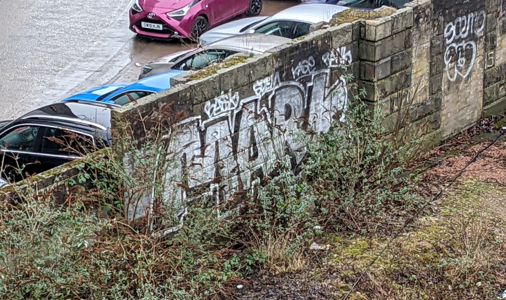

Street Art Aberdeen
Near Wallace Statue (Stop N3), Aberdeen AB25 1GL, UK
Thanks to
Danny Christie / wired.wifi
for the photo
Photo:

Location:
Year created:
Unknown
Medium:
Spray
State:
OK
Other art nearby, the 20 closest...
Instagram image